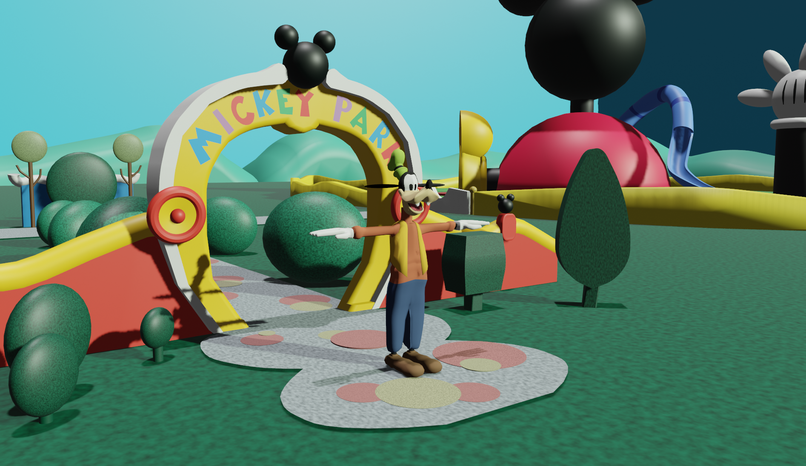

Le personnage de Lumière
Lors de mon premier semestre en animation 3D, j'ai dû réaliser le personnage de Lumière dans la Belle et la Bête. J'ai alors procéder à la modélisation de ce personnage dans un premier temps, puis lors de ma deuxième semaine de 3D, nous avons vu comment texturer nos objets et nos personnages.

Le personnage de Dingo
Lors de ma 3ème semaine de 3D, mes camarades et moi avions à modéliser et texturer un personnage que l'on avait choisi. J'ai donc décidé de réaliser le personnage de Dingo qui est ici exposé dans un décor, que j'ai également modélisé et texturé.
Mes projets en 3D